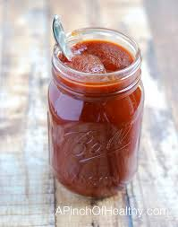

Our Flavors
Sweet Tangy BBQ
The original recipie of our Grandfather. This sweet Texas style BBQ made from all natural ingredients will knock off any of the competitions BBQ due to its sweet flavor and rich flavoring. We will never share the secret ingredient that this one has because it could be recreated if it gets shared. This recepie has never been touched and will be the old classic of Dads BBQ.

Habanero Devil Fire
This BBQ will be sure to knock you back a few as it is our spicy BBQ and will for sure have you sweating. This BBq is mixed with 10 different spices and pepers that make this our patented spicy BBQ. After you have a few bites, you will be sweating and the water you ordered will be gone just like that. Voted 2nd most hottest BBQ since 2014 in all of Texas and we plan to keep making our recipe hotter

Alabama Zesty White BBQ
Our Alabama Zesty White BBQ was inspired in 1974 in Albama by our grandfather. If you are looking for something in the middle of a lot of heat and no heat, this is the perfect spice for you. This BBQ is a cool and tangy BBQ that is extreamly uquie, but extremely liked thoughout resturauants all over America. This BBQ is something for people who love a sweet tangy flavor and cool ranch feeling. This one is perfect for any brisket or choice of meat you are feeling to use.

North Carolina Reaper
Our North Carolina Repear is our unique blend of ghost peppers mixed with herbs and spices. The North Carolina Reaper is also a fan favorite because of the great taste as soon as it hits your mouth. This BBQ is mixed with specific herbs and spices that are native to North Carolina to give it that authetic North carolina feeling. This one will give you enough and perfect blend between sweet and spicy.The perfect blend for people who want the just right amount of kick to it and still want that sweet taste.

These sauces are the top four in order of fan favorites. The other flavors that were left off were Maple-chipotle, spicy and herby, crispy chilli bacon, honey mustard, and ghost pepper. These flavors just missed the list but if there were more options they would definitely make the list. Some of these flavors also didn't make the list because they weren't around at the very beginning when this company was invented.
| Sauce Names |
Spicyness of Flavor |
| Sweet Tangy BBQ |
Very Mild |
| Habanero Devil Fire |
The Hottest Flavor |
| Alabama Zesty White BBQ |
Flaming Hot |
| North Carolina Reaper |
The second hottest flavor |